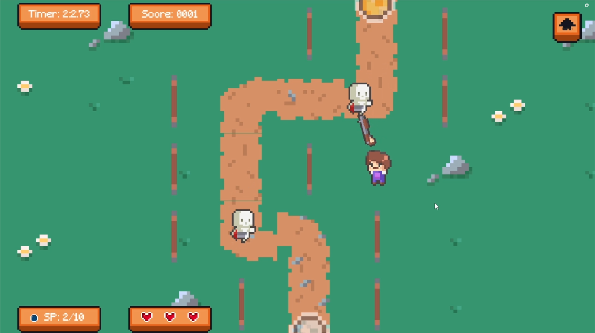
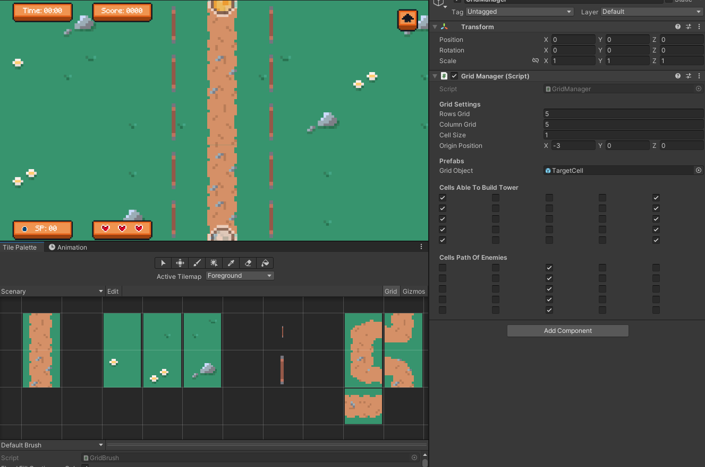
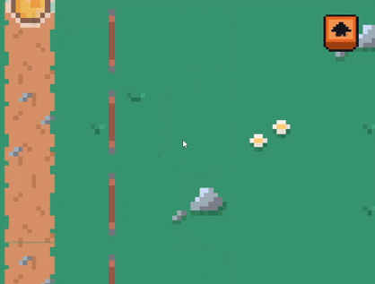
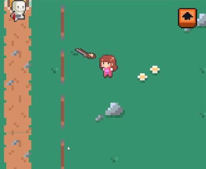
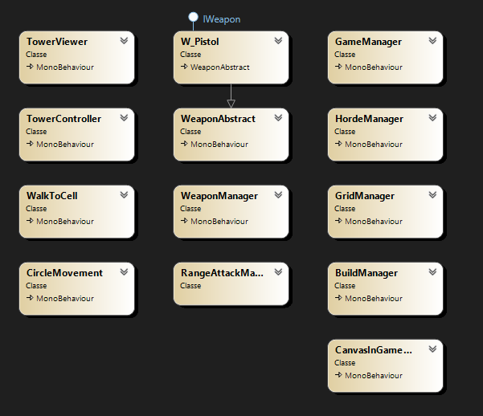

This game was made for a Game Developer Vacancy test in Unity, which was a tower defense with random towers but with different attributes and shots for each tower, in addition to customizing the stages and very attractive animations.
Knowledge I used:
Project management
Game Systems
Scalable, Modular and Maintainable
Game development
Tools and Languages:
Unity
C#
Tile Pallete
Way Points
Object Pool
The Idea
The idea behind the project was a grid-based tower defense game, where the middle path belongs to the enemies, and the sides are our towers.
However, the towers are random, but with different attributes and shots that reach the entire map. The cost of adding a new troop increases over time, and with each enemy defeated you earn a troop point, a point that also appears periodically randomly around the map.

The Development
The development was done over a weekend, since I already had an idea for the game, I was able to start developing it straight away.
Overall, the development was very fast, there were already some ideas on how to develop the enemy and tower systems due to old projects, the grid was easy to assign, as well as the path of the towers.
The Tile Pallet was also used to make it easier to customize the levels.

The most time-consuming part, and the one I focused on the most, was the animations, from the beginning I had a solid idea of what I wanted, even if the project ended up not making me pass.
In the end, I got exactly the result I wanted, the idea was that since they are random towers and they are humans almost like farmers, I wanted them to come from off-screen on the indicated side to the point the player chose.
So if you select a slot on the left, the character is spawned off-screen and walks to their chosen position on the left side, the same happens if it is a slot on the right.
This animation gives the player a really good feeling, as if the farmers were really coming together to protect themselves from zombies.

In addition, the animation of the arms being disconnected from the body and aiming according to the current target of that tower. (The project requested only global aim and always on the first enemy, but the system has customization for the range of the tower's aiming and which enemy will prioritize, whether it is the first or the last)

The Game Systems
With more time, I would make changes mainly with Scriptable Objects and Scenes.
Currently, there is a scene for each phase. The ideal would be a manager that receives data from the OS and assembles the Grid and the scenario according to the data of that phase (something I have already done in other projects).
Currently, I would also pass the data from the Towers to OSs. Currently, they are in abstract classes, but I think that OSs would allow more flexibility between the data, mainly for balancing.

This diagram represents the class structure of a Tower Defense game developed in Unity. At the center of the combat logic is the IWeapon interface, which defines the weapon contract, partially implemented by the abstract class WeaponAbstract and extended by concrete weapons such as W_Pistol. The management of these weapons and their attacks is done by classes such as WeaponManager and RangeAttackManager.
The system also consists of components responsible for the construction and control of towers (BuildManager, TowerController, TowerViewer), tower behavior (WalkToCell, CircleMovement), and wave control (HordeManager). The scenario organization is done by the GridManager, while the GameManager centralizes the general logic. The player interface is managed by CanvasInGame, ensuring a clear separation between logic, presentation, and game control.
The Final Result
The final result of this two-day Tower Defense project was extremely satisfactory, in addition to being a system that allows scaling and even facilitates future improvements and implementation of new content, in addition to the animation to make the game as smooth and attractive as possible.
The Conclusions
Completing this project guaranteed me a place in the selection process I participated in, this gave me a good base to continue with some Tower Defense game in the future!
Contact Me
Thank you, your contact has been sent!
Sorry! Something happened and your email was not sent.
@ 2024 Akapaya. Todos os direitos reservados.
Akapaya, logotipo da Akapaya são marcas registradas de Akapaya
Arte desenvolvida por Thamires Dantas.
Design do site desenvolvido por Gregory Valentim.
Site desenvolvido por Gregory Valentim.